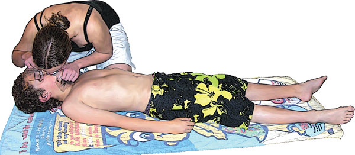

Drowning
Drowning
Drowning occurs after experiencing respiratory impairment from submersion/immersion in liquid which causes a lack of oxygen for the casualty. Drowning is a common cause of accidental death.
The most important consideration the first aid provider can make is to ensure safety. Do not attempt a rescue beyond your capabilities.
Immediate resuscitation at the scene is essential for survival of the casualty after drowning. This requires immediate CPR and calling Triple Zero (000) for an amublance.
Whenever possible, attempt to save the drowning casualty without entry into the water. If entry into the water is essential, take a buoyant rescue aid or flotation device.
Remove all drowning casualties from water by the fastest and safest means available and begin resuscitation as quickly as possible. Use a rescue aid, rope or buoyant aid if the casualty is close to dry land. Use a boat or other water vehicle if possible.

Signs and Symptoms
 pale, cool skin
pale, cool skin
 absent, rapid or laboured respirations
absent, rapid or laboured respirations
 decreased level of consciousness
decreased level of consciousness
 coughing
coughing
 cyanosis (bluish colour)
cyanosis (bluish colour)
 no signs of life
no signs of life

Care and Treatment
 call ' Triple Zero (000) for an ambulance
call ' Triple Zero (000) for an ambulance
 check airway and breathing
check airway and breathing
 give rescue breaths while rescuing from the water if safe to do so
give rescue breaths while rescuing from the water if safe to do so
 commence immediate CPR if required
commence immediate CPR if required
 place in recovery position once breathing is restored
place in recovery position once breathing is restored
 treat hypothermia if present
treat hypothermia if present
 suspect and treat spinal injuries
suspect and treat spinal injuries
 DO NOT attempt a rescue beyond your capabilities
DO NOT attempt a rescue beyond your capabilities
It should be remembered that drowning has a detrimental effect on the respiratory system and recovery, since the drowned casualty may experience a buildup of fluid in the lungs.
All casualty's that have had a drowning experience should seek immediate medical attention.

Untrained rescuers should not attempt to perform any form of resuscitation with a casualty in deep water.